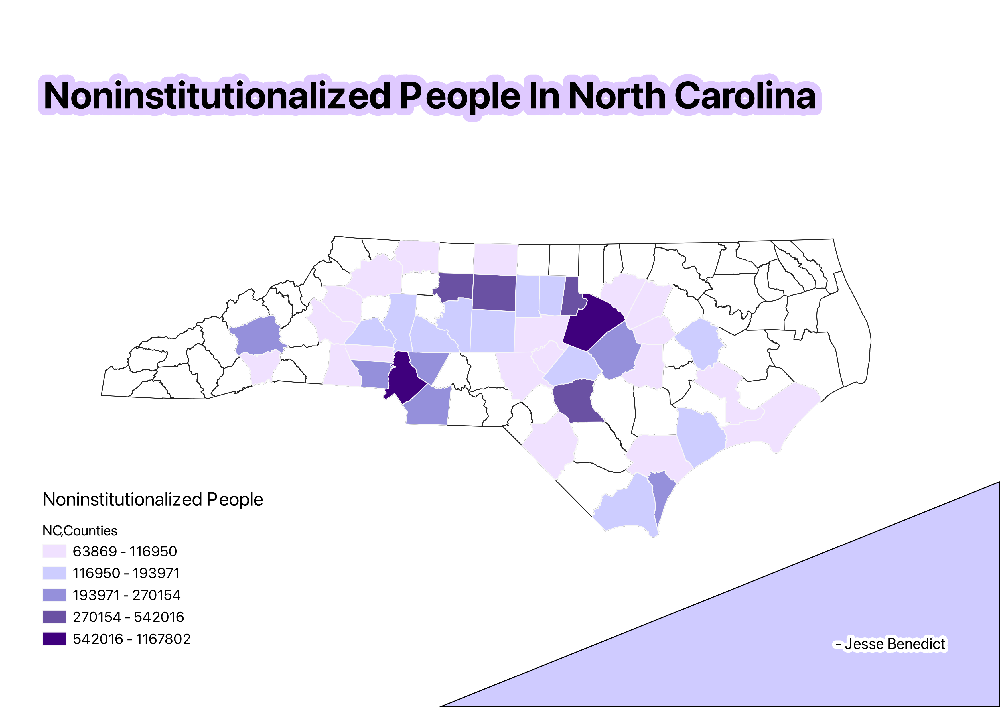

Homework 6: Census data choropleth
Jesse Benedict
This map shows every county in North Carolina. The color varients correlat with the ammount of noninstitutionalized people in each county.The white counties have no data.
NCmap

Data used for this project
CSV Data Download
CVS Data Github